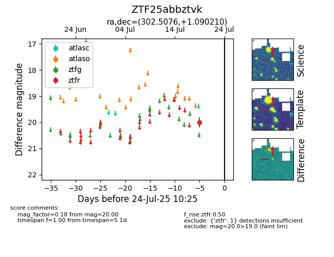

Target ZTF25abbztvk at 2025-07-24 10:25, see:
FINK: fink-portal.org/ZTF25abbztvk
Lasair: lasair-ztf.lsst.ac.uk/objects/ZTF25abbztvk
ALeRCE: alerce.online/object/ZTF25abbztvk
alt names
ZTF25abbztvk (ztf,fink)
coordinates:
equatorial (ra, dec) = (302.5076,+1.09021)
galactic (l, b) = (43.1794,-16.88923)
photometry
last ztfr=20.00
1 ztfr detections
